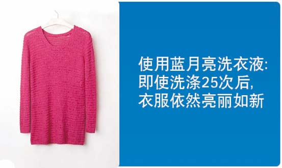
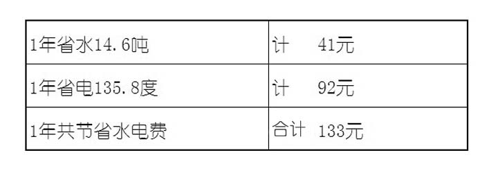
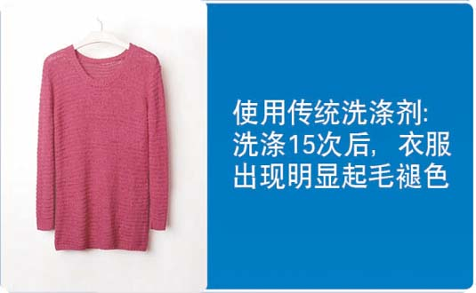

洗衣液更省钱
13-12-31
高浓度，用量少，使用成本更低！
新发布的行业标准规定，洗衣液总活性物含量不得低于15%，蓝月亮洗衣总活性含量大于21%，超出行业标准线40%
用蓝月亮洗衣液：
洗10件衣服只需30g（滚筒洗衣机）
1瓶2kg售价39.8元，可洗666件衣服
洗一件衣服只需6分钱
低泡易漂，省时、省水、省电！
蓝月亮洗衣液采用独特的泡沫控制技术，1-2次即可漂清，而高泡沫洗涤剂洗衣时需要3-4次。
按每次少漂洗2次计算：

按每次少漂洗2次计算，1年可减少洗衣机运转时间122小时，延长洗衣机使用寿命 。
衣服穿着次数增加了60%！

在上述对比试验中，用蓝月亮洗衣液至少增加衣服10次穿着次数，延长衣服寿命60%。